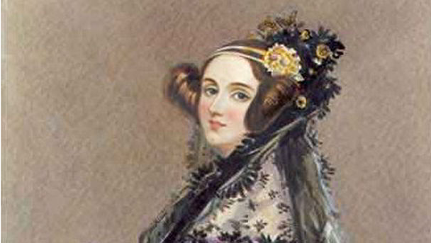
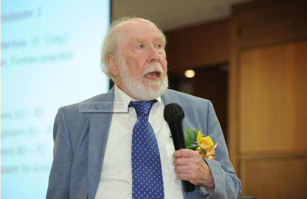
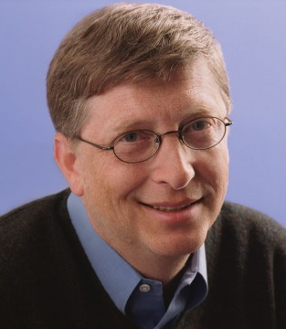

>
>
更有网友感叹程序员就是劳碌命没日没夜没假期实在悲催。每年第256天(平年9月13日或闰年9月12日)，是国际程序员节。之所以选取256，是因为256是程序员熟知的8位元基本数字。程序员节是俄罗斯的官方节日，每逢这一天，人们都要穿白色服装来庆祝。有网友称，5年秃顶的程序猿，命运悲催。
广州某IT公司上演一场因男程序员向同性同事表白遭拒，一怒之下清除公司服务器所有数据的闹剧。程序员多为苦逼“技术宅”，通宵熬夜工作乃家常便饭，工作压力大啊，记住了！千万别轻易得罪程序员！
所谓程序员，是指那些能够创造、编写计算机程序的人。不论一个人是什么样的程序员，或多或少，他都在为我们这个社会贡献着什么东西。然而，有些程序员的贡献却超过了一个普通人一辈子能奉献的力量。这些程序员是先驱，受人尊重，他们贡献的东西改变了我们人类的整个文明进程。下面就让我们看看人类历史上最伟大的12位程序员
埃达·洛夫莱斯，原名奥古斯塔·埃达·拜伦，是著名英国诗人拜伦之女。数学爱好者，被后人公认为第一位计算机程序员。 在1842年与1843年期间，埃达花了9个月的时间翻译意大利数学家路易吉·米那比亚讲述查尔斯·巴贝奇计算机分析机的论文。在译文后面，她增加了许多注记，详细说明用该机器计算伯努利数的方法，被认为是世界上第一个计算机程序；因此，埃达也被认为是世界上第一位程序员。不过，有传记作者也因为部份的程序是由巴贝奇本人所撰，而质疑埃达在电脑程序上的原创性。 埃达的文章创造出许多巴贝奇也未曾提到的新构想，比如埃达曾经预言道：‘这个机器未来可以用来排版、编曲或是各种更复杂的用途。’ 1852年，埃达为了治疗子宫颈癌，却因此死于失血过多，年仅36岁。她死后一百年，于1953年，埃达之前对查尔斯·巴贝奇的《分析机概论》所留下的笔记被重新公布，并被认为对现代计算机与软件工程造成了重大影响。
尼克劳斯·埃米尔·维尔特，生于瑞士温特图尔，是瑞士计算机科学家。 从1963年到1967年，他成为斯坦福大学的计算机科学部助理教授，之后又在苏黎世大学担当相同的职位。1968年，他成为苏黎世联邦理工学院的信息学教授，又往施乐帕洛阿尔托研究中心进修了两年。 他是好几种编程语言的主设计师，包括AlgolW，Modula，Pascal，Modula-2，Oberon等。 他亦是Euler语言的发明者之一。1984年他因发展了这些语言而获图灵奖。他亦是Lilith电脑和Oberon系统的设计和运行队伍的重要成员。 他的文章ProgramDevelopmentbyStepwiseRefinement视为软件工程中的经典之作。他写的一本书的书名Algorithms+DataStructures=Programs（算法+数据结构=程序）是计算机科学的名句。
威廉·亨利·"比尔"·盖茨三世，是一名美国著名企业家、投资者、软件工程师、慈善家。早年，他与保罗·艾伦一起创建了微软公司，曾任微软董事长、CEO和首席软件设计师，并持有公司超过8%的普通股，也是公司最大的个人股东。
